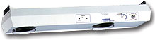

| Top Gun | |||
|
Balanced to 0 +/- 15V, the Top Gun features high blow-off force to provide efficient cleaning and rapid static charge decay. A 0.01 micron filter at the exit of the gun ensures the air is clean. The gun body is lightweight but durable. It features a light-touch trigger, making it comfortable even for extended use. All functionality is built into the gun: a flow control valve, a balance adjustment for calibration, and a two level LED which indicates both power and ionization. The gun and cable are static dissipative. A hanger is provided for easy mounting. Features Include:
|
|||
| Aerostat Guardian CR2000 | |||
|  |
The Guardian CR2000 ensures cleanroom compatibility using specially chosen components and materials. All fan and air bearing surfaces are manufactured to insure cleanliness. Fan assemblies are particle-tested to Class 10 (209E; ISO class 4) particle limits. The Guardian CR2000's final assembly, final test, and packaging take place in a Class 100 cleanroom to minimize risk of contamination. Features Include:
|
||
| Aerostat XC Extended Coverage Ionizing Air Blower | |||
|
The XC neutralizes static across an entire 2’ x 6’ benchtop area. Features Include:
|
|||
| Aerostat PC Ionizing Air Blower | |||
|
The Aerostat PC provides optimum protection from the destructive effects of ESD. The PC features an integrated heater for operator comfort. Features include:
|
|||
| FMX-003 Electrostatic FieldMeter | |||
|
SIMCO's Model FMX-003 Electrostatic Fieldmeter is a compact, portable survey instrument for measuring electrostatic charge. The FMX-003 measures positive and negative polarity electrostatic charges to 20 kV (20,000 V) at a distance of one inch (25 mm). Results are simultaneously displayed numerically and in bar graph format. POWER on/off, ZERO adjustment, Ion Balance (IB) and HOLD are all push button operations. Two LED guide ring lights on the measuring side of the unit converge at the proper distance from a test object. The conductive case and ground snap facilitate grounding for accurate measurement. The circuitry of the FMX-003 has been designed to make measurements in areas using air ionization. Features include:
|
|||